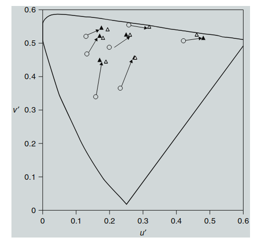

9. 色适应模型
色适应（Chromatic adaptation）是人类视觉系统中理解和建模颜色外观最重要的特性之一。由于其在视觉科学中的重要性，关于色适应的文献非常丰富。第8章回顾了一些色适应现象和机制的重要特性，并提供了预测对应颜色的色适应模型的基本框架。本章在此基础上，进一步详细描述了几种特定的色适应变换。虽然不可能涵盖所有已发布的模型，但本章试图介绍多种模型，并展示它们之间的基本关系。对模型或历史发展感兴趣的读者应深入研究相关文献，特别是由CIE（2004b）进行的评审。其他可以作为起点的资源包括第8章中引用的几篇评论文章（Bartleson 1978，Lennie 和 D’Zmura 1988，Terstiege 1972，Wright 1981a）。关于早期色适应模型的历史，Helson等人（1952）提供了一项有趣的概述，而Wyszecki（1986）撰写了一篇涵盖整个颜色外观领域的优秀综述，内容涉及色适应的详细处理。该领域的一些经典文献可以在MacAdam（1993）编辑的论文集中找到。
本章中介绍的这些模型能够计算对应颜色，但它们并不是色貌模型，因为这些模型不包含对明度（lightness）、彩度（chroma）和色调（hue）等外观属性的预测。然而，这些模型在跨越不同观看条件的情况下预测颜色匹配时非常有用，这是三刺激值色度学（tristimulus colorimetry）上的一个重要扩展，并且在某些应用中已经足够，同时也是所有颜色外观模型的基础。任何生理上合理的色适应模型都必须作用于代表锥体（cone）反应的信号（或至少是相对锥体反应）或它们的简单组合。因此，在那些使用CIE色度学重要的应用中，首先需要将CIE三刺激值（XYZ）转换为锥体响应（在不同模型中表示为LMS、RGB或rgb）。幸运的是，锥体响应可以通过CIE三刺激值的线性变换准确表示。此类转换的一个示例在图9.1中图示。这样的转换或类似的转换在所有与CIE色度学兼容的色适应和颜色外观模型中都很常见，因此不会在每种情况下都明确提到。如果特定模型中此类转换至关重要，本章及后续章节将明确指出。
译者注：
和色貌模型的区别：
色适应模型主要关注颜色在不同光照条件下的变化和对应颜色匹配，而色貌模型则更加全面，涉及颜色的感知属性，如明度、彩度和色调。
色适应模型只关心光源改变对颜色匹配的影响。
色貌模型不仅包括色适应，还涉及视觉感知中的其他因素，如对比度、环境亮度等。
色适应模型通常用于确保颜色在不同光源下的视觉一致性，而色貌模型则用于描述和预测在各种环境下的颜色外观。
9.1 Von Kries 模型
所有现代可行的色适应模型，无论是在概念上还是在数学上，都可以追溯到Johannes von Kries在1902年提出的假设。Von Kries 提出了一些关于色适应的观点，这些观点至今仍然在被“重新发现”。他的想法是提出一个简单的色适应模型，作为未来研究的“假想模型”。他对这些想法期望并不高，正如MacAdam翻译的1902年论文中的一句话所描述：“如果有一天能通过直接观察视网膜，以客观的方式区分光的各种效应，那么人们或许会带着怜悯的微笑回忆起几十年前试图通过如此漫长的迂回方法理解同样现象的努力。” ——（MacAdam 1970: 119）
然而，一百年之后，没有人带着“怜悯的微笑”回顾Von Kries的工作。相反，许多人带着惊叹的目光回顾他的研究，因为他的理论经受住了时间的考验。Von Kries（1902年）并没有提出一套具体的方程来代表今天所谓的Von Kries模型、Von Kries比例律或Von Kries系数律。他只是通过文字简要地描述了自己的假设，并讨论了这些想法可能产生的影响。根据MacAdam翻译的Von Kries的原话：“这可以理解为，视觉器官中的各个成分是完全独立的，并且每个成分的疲劳或适应仅根据其自身功能进行。” ——（MacAdam 1970: 118）
Von Kries 概述的这些思想被他视为将Grassmann的加色混合定律扩展到跨越两种观察条件下的比较。
Von Kries 假设的现代解释
Von Kries 假设在色适应模型中的现代解释可以通过方程 9.1 到 9.3 来表示：
L、M 和 S 代表初始的锥体响应；\(k_L\)、\(k_M\) 和 \(k_S\) 是用于调整这些锥体信号的系数（增益控制）；\(L_a\)、\(M_a\) 和 \(S_a\) 是适应后的锥体信号。方程 9.1 到 9.3 是一种简单的增益控制色适应模型，其中每种锥体类型都有独立的增益系数。
在大多数现代 Von Kries 模型中，\(k_L\)、\(k_M\) 和 \(k_S\) 的值通常是场景白色或最大光源下锥体响应的倒数。见方程 9.4 至 9.6：
通过上述增益系数，Von Kries 模型可以用于计算不同光源下的对应颜色。完成必要步骤后，结果如方程 9.7 至 9.9：
矩阵形式的色适应模型
在某些情况下，将色适应模型表示为矩阵变换会更加方便。上文描述的Von Kries模型的解释可以通过方程 9.10 的矩阵形式表示：
跨光源的转换可以通过单行矩阵形式方程 9.11 表示：
译者注：
应用场景：这种矩阵形式常用于色彩转换、显示器校准和其他需要处理不同光源下颜色一致性的场合。
Von Kries 转换被用来预测 Breneman (1987) 的视觉数据，这些数据已在第8章中进行了描述。结果如图9.2中的u′v′色度图所示，空心符号表示Breneman的对应颜色数据，实心符号表示使用Von Kries模型的预测结果。如果模型预测完全准确，实心三角形应与空心三角形完全重合。在此计算中，日光适应下的色度（图9.2中的空心圆）被用于预测白炽灯适应下的对应色度（三角形）。从图9.2可以明显看出，Von Kries 假设确实是一个很好的假设，现代解释将其视为色彩适应转换，并且该模型非常成功地预测了这些数据。

图9.2 使用 Von Kries 模型对部分示例对应颜色数据的预测。空心三角形代表视觉数据，实心三角形代表模型的预测结果。
Helson等人(1952) 的早期研究通过记忆匹配得出了对应颜色，并测试了Von Kries假设，结果表现良好。Brainard 和 Wandell (1992) 以及 Chichilnisky 和 Wandell (1995) 提供了更多的实验数据和分析，讨论了Von Kries 假设的效用及其局限性。
然而，某些视觉数据与 Von Kries 模型的预测存在差异。这些差异促使研究人员探索了多个方向，这些方向将在本章的后续部分及全书中描述。或许这并不令人惊讶，正如 Von Kries (1902) 本人所预见的那样。他在描述现在称为 Von Kries 模型的段落之后写道：
“但如果考虑到实际的生理设备，即这些过程的基础，那么质疑事情是否如此简单是允许的”（MacAdam 1970翻译：118页）。
确实，事情并不如此简单，但令人惊讶的是，这样一个简单的假设竟然如此接近地解释了大多数的色彩适应现象。
9.2 Retinex Theory
Retinex理论由Edwin Land及其团队提出，用来解释颜色恒常性，即我们人类视觉在不同光线下看到的物体颜色几乎不变的现象。该理论可以看作是von Kries模型的增强版。虽然有很多改进建议，但Retinex算法的关键在于它明确处理了场景中颜色的空间分布，以更好地模拟复杂场景中的视觉感知。
Land的理论提出，颜色外观更多地由物体的表面反射率决定，而不是由反射光的光谱分布（即三刺激值）控制。Retinex算法在Land（1986）的最新版本中相对简单。Land提出了三种颜色机制，分别对应长、中、短波长的视锥细胞，并称这些机制为Retinexes，因为它们被认为是视网膜和大脑皮层机制的结合。
Retinex算法的关键是通过计算场景中某个点的信号，并将其与整个场景中相同Retinex机制的平均信号进行归一化处理。这个算法最大的特点是它承认背景变化对颜色的影响。通过调整用于归一化的Retinex信号的空间分布，背景对颜色感知的影响也会发生变化。如果将归一化信号设定为场景的平均值，Retinex算法就会简化为von Kries模型的一种典型实现。
虽然在生理学模型上存在一些问题（如Brainard和Wandell 1986, Lennie和D’Zmura 1988提出的），但如果我们更关注算法的输出，而不是严格模拟生理机制，Retinex理论依然非常有用。比如，它已经被应用于开发用于动态范围压缩和颜色校正的数字图像处理算法（Jobson等人，1997）。McCann（1993）回顾了Retinex理论在实际应用中的挑战与成功之处。高级色貌模型中需要同时考虑空间和光谱维度，这一点毋庸置疑，而Retinex理论中的概念为实现这一目标提供了一些启示。其他方法也在开发中（如Poirson和Wandell 1993，Zhang和Wandell 1996）。第20章将更全面地讨论空间色适应和图像外观的模型。
9.3 Nayatani et al. Model
Nayatani等人的模型是对von Kries假设的一个重要改进，它是一个非线性的色适应模型。该模型基于色度学背景（即对CIE三刺激值色度学的增强），并主要应用于照明工程领域。其早期理论基础可以追溯到MacAdam在1961年的研究。
MacAdam的模型（1961年）描述了一种非线性的色适应模型，其中视锥细胞的输出表示为一个常数加上视锥细胞激发值的某个倍数并且被提升到一定的指数。这一非线性模型是基于MacAdam（1956年）早期色适应数据的经验拟合。有趣的是，MacAdam在用线性模型解释数据时，需要假设人眼有五种视锥细胞！这可能是因为他使用了一种特殊的实验技术，即让同一只眼睛的视网膜两部分在不同的条件下进行适应。
MacAdam的非线性模型很好地符合了实验数据，并成为后续非线性模型发展的前驱。
Nayatani的非线性模型（1980, 1981）通过调整视锥细胞的增益开始，然后使用具有可变指数的幂函数进行处理。在该模型中，von Kries 系数与长波、中波和短波视锥细胞的最大响应成比例，幂函数的指数取决于适应场景的亮度。Stevens 和 Stevens（1963）的研究提出了这种非线性特性。
该非线性模型的另一个重要特征是引入了噪声项，以避免除以零的情况，并帮助模拟视觉系统中的阈值行为。以下为模型的通用公式：
其中，\(L_a\), \(M_a\), \(S_a\) 是视锥细胞适应后的信号；\(L\), \(M\), \(S\) 是视锥细胞的激发值；\(L_n\), \(M_n\), \(S_n\) 是噪声项；\(L_0\), \(M_0\), \(S_0\) 是适应场景中的视锥细胞激发值；\(\beta_L\), \(\beta_M\), \(\beta_S\) 是幂函数的指数，并随着适应场景的亮度变化而调整；\(a_L\), \(a_M\), \(a_S\) 是系数，确保色彩恒常性保持一致。
Takahama 等人（1984）扩展了该模型，使其能够预测不同亮度背景下的对应颜色。1987 年，CIE 对该模型进行了现场测试，但测试结果不确定，因此未被采纳为标准。后续改进已在 CIE 的技术报告中总结。模型还用于预测 Breneman（1987）的对应颜色，结果如图 9.3所示。
尽管 Nayatani 模型的预测结果相当好，但在一些实验数据上，预测不如 von Kries 模型准确。这是因为 Breneman 的实验条件不允许完全消除光源的影响，因此色彩适应不够完整。模型预测的颜色向黄色偏移，表明 Breneman 实验中的白炽灯光保留了一些黄色外观。
Nayatani 模型还能够预测 Hunt 效应、Stevens 效应 和 Helson–Judd 效应，而 von Kries 模型由于不考虑亮度影响，无法解释这些现象。

图 9.3 展示了 Nayatani 模型对 Breneman 实验中对应颜色数据的预测结果。空心三角形代表实验数据，实心三角形表示模型预测结果。整体偏向黄色，表明模型在特定条件下的表现不如 von Kries 模型。
完整的 Nayatani 色貌模型将在第11章详细描述。
9.4 GUTH'S MODEL
Guth 的模型（1991, 1995）是 von Kries 假设的一个重要变体，它更多来自视觉科学领域，而不是传统的色度学。与 CIE 三刺激值不直接相关，因为模型中使用的视锥细胞响应不是 CIE 色匹配函数的线性转换。这虽然在实际应用中带来了一些困难，但实际上使用基于 CIE 三刺激值推导的视锥细胞响应来代替，也不会对预测结果产生太大影响。
Guth 模型是 ATD 视觉模型的一部分（详见第14章），该模型通过多年的视觉实验发展而来，主要用于预测阈值心理物理学实验的结果，而不是色貌模型中颜色外观的维度缩放（参见第4章）。Guth 模型的色彩适应方程如下：
其中，\(L_a\), \(M_a\), \(S_a\) 分别是视锥细胞适应后的信号，\(L\), \(M\), \(S\) 是视锥细胞的激发值，\(L_{r0}\), \(M_{r0}\), \(S_{r0}\) 是适应场景中的视锥细胞激发值经过非线性处理后的结果，\(\sigma\) 是一个常数，通常为 300。
通过代数操作，可以看出该模型与 von Kries 模型的关系。忽略初始的非线性部分，可以得到类似 von Kries 的增益控制系数，如公式 9.21 所示：
与 von Kries 模型的区别在于噪声项 \(s\)，其在低强度下影响较大，随着亮度增加，Guth 模型的行为逐渐接近 von Kries 模型。

图 9.4 展示了 Guth 模型对 Breneman (1987) 实验中对应颜色数据的预测结果。空心三角形代表实验数据，实心三角形表示模型预测。可以看到，模型的预测与观察结果之间存在系统偏差，这主要由 \(s\) 参数引起。减小 \(s\) 值将改善模型预测的准确性。
Guth 模型可以对现有数据做出准确的预测，但其参数在不同实验条件下需要调整，特别是在无法提前确定视图条件的情况下，模型的适用性受限。
9.5 FAIRCHILD'S 1990 MODEL
Fairchild 色彩适应模型 是对 von Kries 模型的扩展，目的是解释不完全色彩适应现象，并考虑了不同光源下的亮度依赖交互。以下是模型的详细步骤：
第一步：从 CIE XYZ 转换到 LMS 空间
首先，模型将 CIE 三刺激值 \(X\)、\(Y\)、\(Z\) 转换为视锥细胞的三刺激值 \(L\)、\(M\)、\(S\)（长波、中波、短波视锥细胞响应），这个转换使用 Hunt–Pointer–Estevez 变换，并以 D65 标准光源进行归一化。转换公式为：
这里的 M 是标准化的转换矩阵，矩阵 \(M\) 的形式为：
- L：长波视锥细胞响应。
- M：中波视锥细胞响应。
- S：短波视锥细胞响应。
此步骤将 XYZ 空间中的颜色转换为人眼的视锥细胞响应表示（LMS 空间），这样可以更好地模拟人眼在不同光源下对颜色的适应过程。
第二步：应用 von Kries 色彩适应变换
第二步是使用 von Kries 色彩适应变换，同时考虑了不完全适应现象。这个变换的结果是从初始适应条件下计算得到的视锥细胞激发值 \(L'\)、\(M'\) 和 \(S'\)，公式如下：
在这个公式中，A 是色彩适应矩阵，它表示在每种适应光源下视锥细胞响应的变化，矩阵的形式为：
- a_L：长波视锥细胞的调节系数。
- a_M：中波视锥细胞的调节系数。
- a_S：短波视锥细胞的调节系数。
这些调节系数用于表示适应光源对视锥细胞响应的调节程度。
第三步：引入 p 值，量化不完全适应
为了处理不完全适应现象，模型引入了 p 值。p 值用于描述视锥细胞在不同亮度条件下的不完全适应情况。具体而言，p 值取决于适应光源的亮度 \(Y_n\) 和等能光源 \(E\) 的亮度。公式如下：
- p_M：中波视锥细胞的适应系数，表示其适应的程度。p 值接近 1 时，表示视锥细胞完全适应；p 值小于 1 时，表示不完全适应。
- Y_n：适应光源的亮度，即视觉系统之前已经适应的光源的亮度。
- E：等能光源的亮度，是一个理论上的标准光源，用来衡量颜色的适应程度。
通过 p 值的计算，模型能够模拟出在不完全适应条件下的视锥细胞响应。
第四步：视锥细胞间的亮度依赖交互
接下来，模型考虑了视锥细胞之间的亮度依赖交互，通过 C 矩阵来模拟该过程。公式如下：
- C 矩阵：表示视锥细胞之间的亮度交互。这一步旨在模拟不同视锥细胞之间的复杂交互，尤其是亮度依赖现象。
然而，实验中 Pirrotta 和 Fairchild (1995) 发现 C 矩阵引入了不必要的亮度依赖性，导致对图像整体亮度产生系统性偏差。因此，Fairchild (1994b) 在后续版本中删除了 C 矩阵，提高了对简单物体颜色的预测精度，但失去了预测 Hunt 效应 的能力。
第五步：将适应后的 \(L''\)、\(M''\)、\(S''\) 转换回 CIE XYZ
模型的最后一步是将适应后的视锥细胞激发值 \(L''\)、\(M''\) 和 \(S''\) 转换回 CIE 的三刺激值 \(X\)、\(Y\)、\(Z\)。这个过程使用逆变换矩阵 \(M^{-1}\)，公式如下：
- X_2, Y_2, Z_2：新的光源下的 CIE 三刺激值。
- L'', M'', S''：经过适应和视锥细胞间交互后的视锥细胞响应。
整个色彩适应变换的完整表达式
结合上述所有步骤，整个色彩适应变换可以通过一个完整的矩阵方程来表示，如公式 9.38 所示：
- A1, A2：分别表示在初始适应光源和新的观察光源下的色彩适应矩阵。
- C1, C2：分别表示在两种不同光源下视锥细胞间的亮度依赖交互矩阵。
- \(X_1, Y_1, Z_1\)：初始适应光源下的 CIE 三刺激值。
- \(X_2, Y_2, Z_2\)：新的观察光源下的 CIE 三刺激值。
这个公式描述了从一种适应光源下的颜色 \(X_1, Y_1, Z_1\) 转换到另一种观察光源下的颜色 \(X_2, Y_2, Z_2\) 的完整过程。
通过上面的解释和公式，Fairchild 色彩适应模型能够描述不同光源下人眼对颜色的适应过程，并通过引入 p 值来量化不完全适应。尽管后续版本删除了 C 矩阵，该模型仍然能够很好地预测复杂光照条件下的颜色变化。
图 9.5 展示了使用 Fairchild 色彩适应变换对 Breneman (1987) 实验数据的预测结果。无论使用原始版本还是简化版本，预测结果几乎一致，并且在准确性上优于之前介绍的模型。定量分析表明，Fairchild 模型能够良好地预测实际实验数据。

图 9.5：使用 Fairchild 色彩适应变换对 Breneman (1987) 实验数据的预测。空心三角形表示实验数据，实心三角形表示模型预测结果。两者非常接近，表明该模型对实际数据具有很高的预测精度。
后续的实验（Pirrotta 和 Fairchild, 1995）表明，模型中的 C 矩阵引入了不必要的亮度依赖性，导致在不同亮度水平下，物体的亮度发生整体偏移。这种偏移虽然对图像整体的再现质量没有影响，因为整个图像的亮度会一致地偏移，但它对简单物体颜色的预测引入了显著的系统误差。
因此，Fairchild（1994b） 对模型进行了修正，删除了 C 矩阵。这一改进提高了模型对简单颜色的预测精度，同时对图像整体结果没有影响。不过，删除 C 矩阵后，模型失去了预测 Hunt 效应 的能力。然而，在图像处理应用中，这一点并不重要，因为 Hunt 效应 会在色域映射过程中被抵消掉。
这些改进，以及方程中的一些简化（包括不同的标准化处理），成为了最新的 RLAB 色貌模型（Fairchild 1996）的基础，该模型将在第13章详细描述。
9.6 HERDING CATS
CIE (1998) 确立了 CIECAM97s 色貌模型，它的具体内容将在第15章中讲述。该模型使用了一种称为 Bradford 变换 的色彩适应变换，这种变换本质上是 von Kries 变换 的一种修改版本，只在蓝色通道上引入了额外的指数非线性，并优化了视锥细胞的响应曲线。然而，蓝色通道的非线性导致了 CIECAM97s 模型在求逆时出现了一些实际问题。因此，研究人员开始关注更加简单的线性色彩适应变换（即所谓的 CATs），通过优化从 XYZ 到 RGB 的矩阵变换来代替复杂的非线性方法。
Fairchild (2001) 对各种线性 CAT 进行了综述，目的是为 CIECAM97s 的修订版本（即后来的 CIECAM02，见第16章）找到合适的替代方案。研究人员探索了多种推导优化矩阵变换的技术，虽然每种技术略有不同，但它们都能在性能上媲美 CIECAM97s 中使用的非线性 CAT。这个令人鼓舞的结果促使 CIE 技术委员会 TC8-01 最终选择在 CIECAM02 中采用线性 CAT。
使用线性 CAT 的决策非常容易，但选取哪种优化矩阵则较为困难。这些候选矩阵非常相似，它们的共同特征是响应曲线比实际的视锥细胞响应更具光谱锐度（即更加狭窄、光谱区分性更强，甚至包含负值）。虽然这种优化后的响应曲线是否与实际视锥细胞的生理响应相符仍有争议，但这些模型可能更准确地反映了人类视觉系统中色彩适应的综合机制。
通过使用这些更锐化的响应曲线，von Kries 变换 的预测往往比使用视锥细胞响应时的预测具有更高的色彩恒常性。这种更高的色彩恒常性可能模拟了人类视觉系统中高级适应机制的增强效果。
Calabria 和 Fairchild (2001) 进行了一个针对各种线性 CAT 的实际对比实验，结果表明，使用这些优化矩阵生成的图像在实际应用中几乎无法区分。唯一产生显著差异的是基于视锥细胞响应的 CAT。这项研究证明，使用优化后的矩阵变换相比于简单的视锥细胞响应，能够显著提升色彩适应的效果。这一结果也与 CIE TC8-01 针对各种对应颜色数据集所做的测试结果一致。
由于各种优化矩阵在实际应用中的表现基本一致，TC8-01 转而采用次要标准来最终选择在 CIECAM02 中使用的变换矩阵，这就是后来被称为 CAT02 的色彩适应变换。
9.7 CAT02
正如在第 9.6 节所述，CIE TC8-01 (CIE 2004a) 选择了一种基于矩阵优化的线性色彩适应变换，称为 CAT02。这种变换在广泛的对应颜色数据上进行了优化，并且保持了与 CIECAM97s 中非线性变换的近似兼容性。CAT02 的色彩适应变换如下所示：
这里，CAT02 变换矩阵 \( M_{CAT02} \) 定义为：
公式 9.39 说明了色彩适应如何通过 CAT02 矩阵变换从初始光源 \(X_1, Y_1, Z_1\) 转换到新的适应光源 \(X_2, Y_2, Z_2\)：
- 首先将颜色从 XYZ 颜色空间 转换为 RGB 锐化视锥响应。
- 在 RGB 空间中进行适应调整（通过适应光源的 RGB 比例）。
- 最后再转换回 XYZ 颜色空间。
图 9.6 展示了 CAT02 锐化视锥响应与传统的 Hunt–Pointer–Estevez (HPE) 视锥响应的对比。可以看到，CAT02 的响应曲线更加狭窄、光谱区分度更高，甚至包括了一些负值。CAT02 代表了在保持高色彩恒常性的同时，使用线性变换进行色彩适应的简便方法。

图 9.6：Hunt–Pointer–Estevez 视锥响应（细线，标记为 HPE）与 CAT02 色彩适应变换中的“锐化”视锥响应（粗线，标记为 CAT02）的比较。“锐化”后的视锥响应在光谱上更加分明、响应曲线更窄，且包含一些负值。所有响应曲线的最大值已归一化为 1.0。
CAT02 是在 CIECAM02 中使用的线性色彩适应变换。通过优化后的矩阵，CAT02 可以提供更高的色彩恒常性，并且计算更加简单有效。
译者注：
把光谱尽可能分开，能够有更好的色彩恒常性：通过对视锥响应曲线的锐化，CAT02 能够减少不同颜色通道的重叠。这意味着当光源变化时，颜色的响应变化较小，从而实现更好的色彩恒常性。
另外一个角度：曲线越窄，表示每个颜色通道对特定波长的光更加敏感。相比于 HPE 曲线，CAT02 的响应曲线对颜色的区分度更高，能够更精确地处理光谱信息。